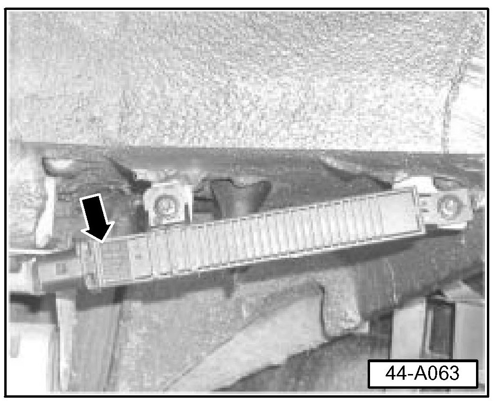
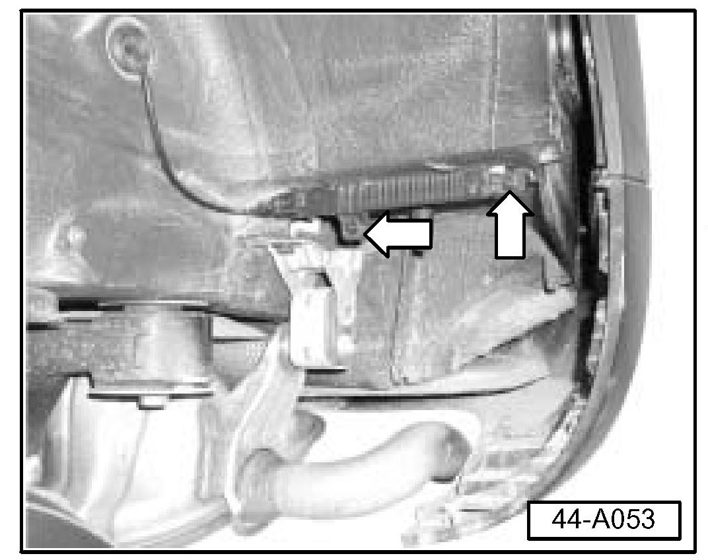
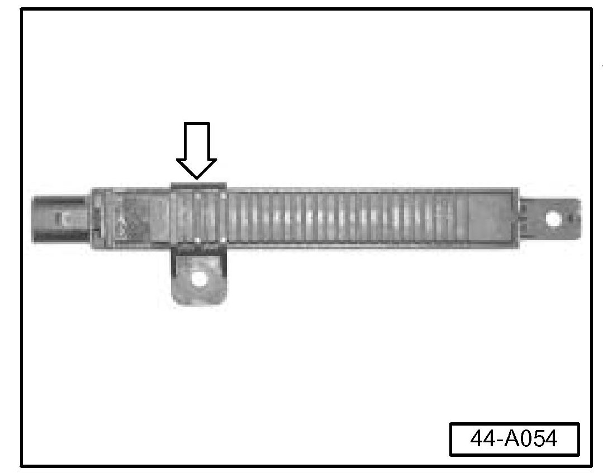
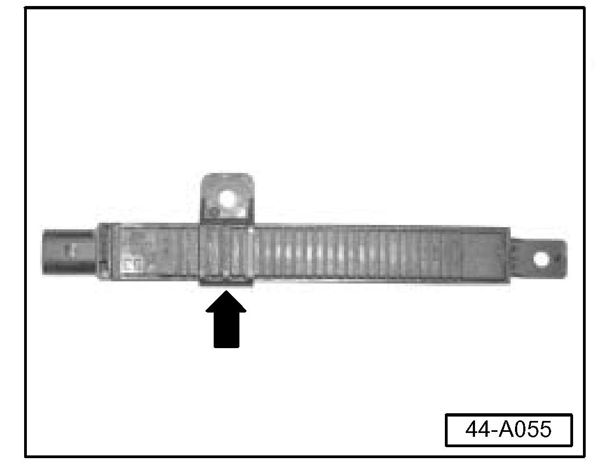
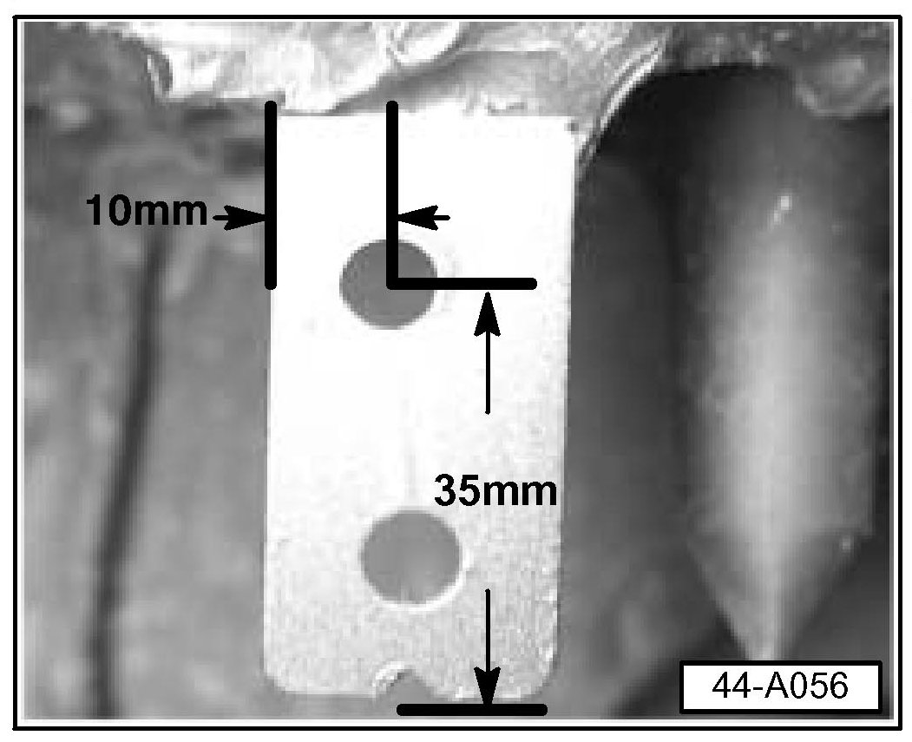
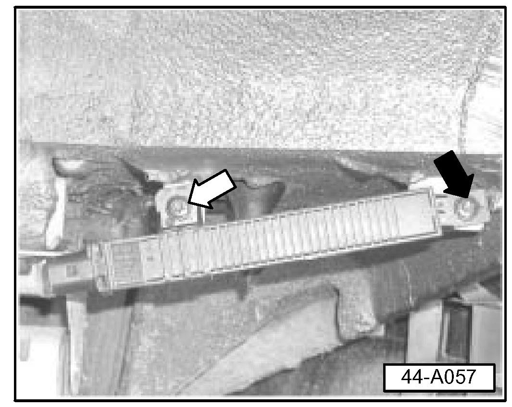
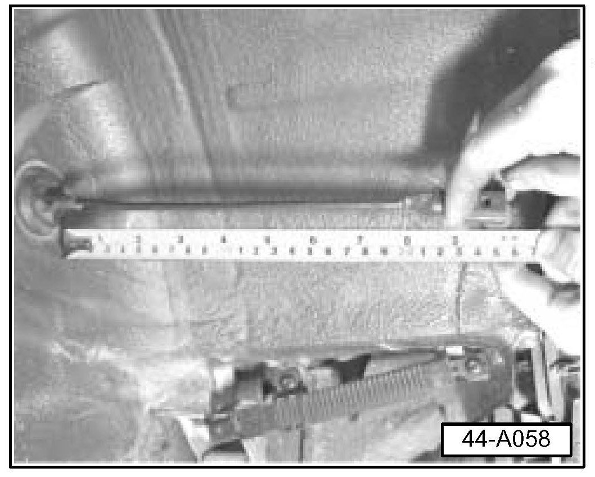
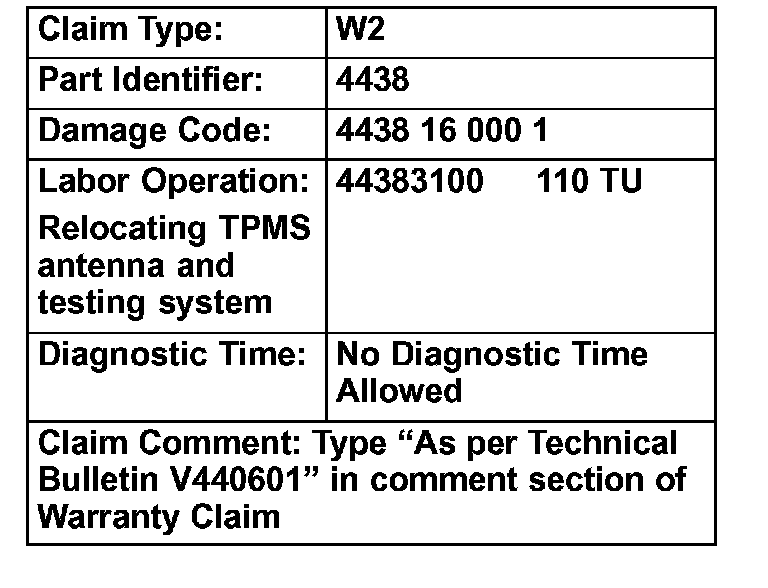

Tire Monitor System - 'Error' Message Displayed
Group: 44Number: 06-01
Date: Feb. 13, 2006
Subject:
Tire Pressure Monitoring System Displays "Error" in
Instrument Cluster
Model(s):
Touareg with Tire Pressure 2004 --> 7L_4D019197
Monitoring System
Supersedes T.B. Group 44 Number 04-02 dated May 20, 2004 due to bulletin being removed from Required Vehicle Updates category.
Condition
Tire Pressure Monitoring System Displays "Error" in Instrument Cluster Multifunction Display.
Service
Inspection
- Remove wheel liner in left rear wheelhouse.
- Check Tire pressure monitoring antenna location.

If Tire pressure monitoring antenna is in revised location -arrow-:
^ No Service Action is required. DO NOT complete this technical bulletin.
If Tire pressure monitoring antenna is in original location:
- Perform the following two steps in order.
1. - Relocate left rear Tire pressure monitoring antenna.
2. - Reassemble vehicle and follow "store tire pressure values instructions.
1. Relocation of the antenna
- Remove antenna and reverse mounting bracket on the antenna as follows:

- Remove both mounting bracket fasteners (arrows).

- Remove fastener bracket from old location (arrow).

- Flip bracket and install as shown (arrow).

- Mark Antenna Mounting bracket in location as shown.
- Drill mounting bracket using a 6.35 mm (1/4 inch) drill bit and remove any burrs from the hole.
^ Paint any bare metal to eliminate any corrosion possibility by applying two coats of Body color touch-up paint.
Note:
Allow sufficient drying time between coats.

- Assemble Antenna to bracket after allowing 15 minutes of paint drying time.
Note:
First, install fastener at fixed point (black arrow), then slide bracket on antenna as necessary to align second fastener (white arrow).

- Adjust cable to body grommet length to 25cm.
Note:
^ Length of antenna cable must be 25 cm from groove in grommet to connector end. Pull antenna cable through grommet to adjust length.
- Install connector to antenna.
- Reassemble removed parts.
2. Follow instructions in Owner's Manual "Tire pressure monitoring system" to store tire pressure values
If system learns and stores values and no warning lights are ON.
^ Work is complete.
- If system does not learn and store values or warning lights are ON.
- See Technical Bulletin Group 44 Number 04-04.

When procedure applies to vehicles with 1 in the New Vehicle Limited Warranty, use the table.